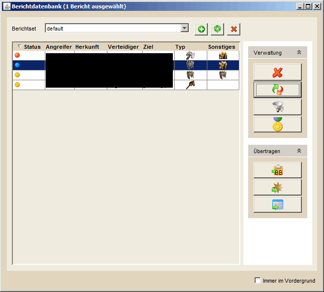
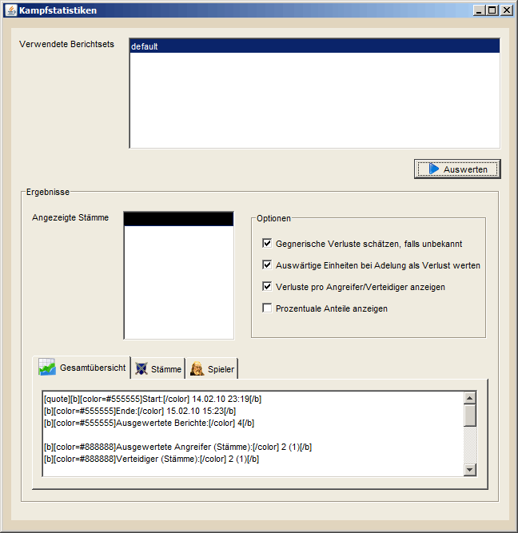

| |
Berichtsdatenbank |
| |
|  |
| |
Die Berichtsdatenbank dient der Verwaltung und Auswertung von Kampfberichten. Der Import von Berichten geschieht, wie in DS Workbench üblich, direkt aus dem Spiel per Copy&Paste. Importierte Berichte werden automatisch und in das Berichtset "default" eingefügt und können später per STRG+C und STRG+V auf andere Berichtseits verteilt werden. In der Berichtstabelle tauchen der Status/die Farbe des Berichts, Angreifer, Herkunft, Verteidiget und Ziel auf. Zusätzlich wird der Typ angezeigt, der einem in DS Workbench verfügbaren Angriffstypen (Off, Fake, AG) entspricht. Die Spalte 'Sonstiges' dient der genaueren Bescheibung des Kampfberichtes. Darin wird angezeigt, ob der Wall oder ein Gebäude beschädigt und ob die Zustimmung gesenkt wurde.
Den kompletten Bericht bekommt man angezeigt, wenn man mit der Maus über die Spalte 'Status'
fährt und den Mauszeiger dort 1-2 Sekunden nicht bewegt. Das Menü auf der rechten Seite bietet die folgenden Funktionen:
- Übertragen
- Truppen in Trupenübersicht einfügen: Erlaubt es, die überlebenden Truppen des Angreifers und/oder des Verteidigers der gewählten Berichte in die Truppenübersicht zu übertragen, sofern diese bekannt und nicht verborgen oder nicht erspäht wurden.
- Bericht in A*Star einfügen: Fügt den gewählten Bericht in A*Star ein, etwa um zu prüfen wieviele Angriffe notwendig sind um das angegriffene Dorf zu cleanen. Diese Information kann man im Anschluss dafür verwenden, um direkt die entsprechende Anzahl Angriffe zu planen. (siehe Hilfe zu A*Star)
- Sonstiges
- Berichte auswerten: Erlaubt es Statistiken über all Berichte zu erstellen (siehe unten "Sonderfunktionen")
|
| |
Shortcut-Funktionen |
|
|
- Kopieren von Berichten per STRG+C: Kopiert die gewählten Berichte in einem internen Format in die Zwischenablage, um sie per STRG+V in andere Berichtsets einfügen zu können.
- Ausschneiden von Berichten per STRG+X: Schneidet gewählte Berichte aus, um sie per STRG+V in andere Berichtsets einfügen zu können.
- Einfügen von Berichten per STRG+V: Für vorher kopierte oder ausgeschnittene Berichte per STRG+V in das aktuelle Berichtset ein.
- BB-Export von Berichten per STRG+B: Exportiert gewählte Berichte per STRG+B als BB-Codes in die Zwischenablage, um sie im Spiel einfügen zu können.
- Löschen per ENTF: Löscht gewählte Berichte per ENTF.
- Suchen nach Berichten per STRG+F: Erlaubt es nach Berichten zu suchen die bestimmte Kriterien erfüllen.
|
| |
Sonderfunktionen |
| |
|  |
| |
| DS Workbench erlaubt es neben der Erfassung von Berichten aus, diese auszuwerten und Statistiken dazu zu erstllen. Hierfür wählt man zuerst die Berichtsets an, die man in die Statistiken mit aufnehmen möchte. Anschließend klickt man auf "Auswerten" und erhält eine Auswertung in BB-Codes im unteren Bereich. Diese kann man noch verfeinern, indem man berücksichtigte Stämme wählt und verschiedene Anzeigeoptionen aktiviert oder deaktiviert. Die BB-Codes kann man im Anschluss direkt in den entsprechenden Feldern markieren und per STRG+C in die Zwischenablage kopieren, um sie z.B. im Spiel einzufügen. |
| |
|
Ist die Option Gegnerische Verluste schätzen, falls unbekannt aktiviert, so wird versucht, die Verluste anhand der gesenkten Walllevel zu schätzen. Dies geschieht in den folgenden fünf Abstufungen:
- Keine Zerstörung des Walls: Unbekannte Anzahl gegnerische Verluste
- Senkung um 1 Walllevel: Etwa 2.000 Einheiten verloren
- Senkung um 2 Walllevel: Etwa 4.000 Einheiten verloren
- Senkung um 3 Walllevel: Etwa 6.000 Einheiten verloren
- Senkung um 4 Walllevel: Etwa 8.000 Einheiten verloren
Natürlich ist diese Abschätzung sehr ungenau, besonders wenn der Wall zum Zeitpunkt des Angriffs sehr niedrig war und abhängig von der Art der angreifenden und gegnerischen Truppen. In vielen Fällen sind die angenommenen Werte aber recht gute Schätzungen. |
|
|